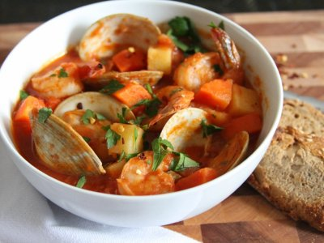

Welcome to Recetas de mariscos
recetas mexicanas de mariscos y pescados
2021.06.23 22:05SUSCRIBIRME Atajo de Navegación: Saltar al contenido principal Saltar al Menú Lo último Lo más visto Delira con lo mejor de nuestras recetas, directo en tu correo. suscribirme Videos Inicio En 1.2.3 Slow food De temporada Healthy Postres y Bebidas Agenda Life&Tips
LO QUE TODOS ESTÁN COCINANDO:
POLLO relleno de QUESO con ESPINACAS y envuelto en TOCINO12827 personas lo han probado
Cómo hacer TACOS al PASTOR en casa si no vives en México527 personas lo han probado
¿Cómo hacer MASA para EMPANADAS con 1 KILO de harina? + Recetas518 personas lo han probado
Únete y olvídate del calor con nuestro recetario de helados caseros, ¡sin máquina!
Lo quiero15 irresistibles recetas de mariscos, ¡que no son caldo ni empanadas!
compartir en facebook, se abrirá en otra ventana compartir en twitter, se abrirá en otra ventana compartir en pinterest, se abrirá en otra ventana compartir en flipboard, se abrirá en otra ventana Ver másalertas agregar a favoritos, se abrirá una ventana modal en caso de no haber iniciado sesión enviar por correo, se abrirá en otra pestaña imprimir se abrirá en otra pestaña
15 irresistibles recetas de mariscos, que no son caldo ni empanadas! / Foto: iStock
Delira con lo mejor de nuestras recetas, directo en tu correo suscríbeteAl hacer click en Suscríbete elegirás el contenido que quieras recibir en tu correo y quedarás suscrito a nuestro boletín el cual podrás cancelar en cualquier momento; no olvides revisar tu carpeta de Spam.
Ayko Pruneda Coordinador
Periodista interesada en las historias detrás de la comida. Le gusta descubrir nuevos lugares para comer y la cerveza. Su twitter es @Ayko_Pruneda
Con estas recetas mexicanas de mariscos y pescados vas a conquistar a toda tu familia, ya que hay para todos los gustos: pescados, camarones, ostiones, entre otros, que podrás preparar en empanadas, caldos, arroces, cocteles y marinados. ¡Perfectos para cualquier paladar mexicano!
Da clic en cada título para conocer las recetas e ingredientes completos.
1. Prepara las empanadas de camarón más deliciosas con esta receta
Atrévete a probar esta delicia que es muy común de la temporada con la siguiente receta. ¡Te va a encantar!
2. Prepara el mejor cóctel de camarones
Una de las recetas más tradicionales para el inicio de la temporada de calor son los cócteles de mariscos.
3. Deliciosa tarta de mariscos
Sorprende a tus seres queridos con esta riquísima tarta de mariscos. Tiene un relleno cremoso con sabor a chipotle y camarón, ¡te encantará!
4. Prepara unos frescos aguacates rellenos de mariscos
Dales un giro a los típicos aguacates rellenos con esta receta de aguacates rellenos de mariscos. Te aseguro que te vas a enamorar.
5. Caldo de mariscos "7 mares" para chuparse los dedos
¿Tienes ganas de una mariscada? Prueba este caldo de mariscos estilo "7 mares". Te encantará. Busca que todos tus ingredientes estén frescos y disfruta.
6. Sopa de mariscos con tomate y limón, ¡una delicia al paladar!
Viaja a la playa con tu paladar con esta riquísima sopa de mariscos con tomate.
7. Prepara un delicioso pozole rojo, ¡lleno de mariscos!
Prepara esta versión costeña del delicioso pozole y agrégale la sazón de los frutos del mar.
8. Espagueti con mariscos y hongos
Empieza tu semana con esta riquísima receta de pasta con mariscos. Es fácil de hacer y además, tiene un gran sabor.
9. Prepara una deliciosa lasaña rellena de mariscos y mucho queso
Disfruta de una deliciosa lasaña diferente, rellena de deliciosos mariscos con salsa de jitomate y queso. Ideal para la cuaresma y el verano.
10. ¡Tienes que probar este irresistible chilpachole de camarón!
Este platillo tiene su origen en una sopa de tradición francesa, la soupe aux fruits de mer que consiste en un caldo en el que se cuecen mariscos y después se le agregan vegetales.
11. Para el antojo de mariscos, ¡arroz a la tumbada!
El arroz a la tumbada, llena de pescados y marisco, queda delicioso, caldosito y sustancioso. No te pierdas esta ricura de la cocina mexicana.
12. El pescado te quedará suave y jugoso con esta marinada especial
El pescado es un ingrediente grandioso para utilizar en la cocina. Además de que es muy bajo en grasa, aporta una cantidad mínima de calorías, y claro, es muy rico.
13. Aprende a preparar la famosa salsa bruja en casa (para pescados y mariscos)
La salsa bruja es uno de los ingredientes principales para preparar un buen cóctel de camarones y otros mariscos.
14. Cremosa salsa picante para mariscos y pescados estilo Ensenada
Aprende a preparar una rica salsa picante para pescados y mariscos estilo Ensenada, ¡queda espectacular!
15. Aderezo oriental de soya y limón, ¡para ensaladas y mariscos!
Este aderezo de soya y limón es muy delicioso y facilísimo de preparar, ¡en solo 3 pasos!
¡Buen provecho!
TE RECOMENDAMOS
8 deliciosos aderezos para acompañar tus pescados y mariscos esta Cuaresma
¿Cómo evitar riesgos al comer pescados y mariscos?
Guía para escoger mariscos
No olvides guardar tu contenido aquí y seguirnos en Pinterest
No olvides guardar tu contenido aquí y seguirnos en Pinterest
compartir en facebook, se abrirá en otra ventana compartir en twitter, se abrirá en otra ventana compartir en pinterest, se abrirá en otra ventana compartir en flipboard, se abrirá en otra ventana Ver másalertas agregar a favoritos, se abrirá una ventana modal en caso de no haber iniciado sesión enviar por correo, se abrirá en otra pestaña imprimir se abrirá en otra pestaña
Cocinar es lo de hoy, las mejores recetas están a tu alcance.
SuscríbeteRecetas saludables para resaltar la belleza
Logo Cocina Delirante Imagen Digital
Únete y olvídate del calor con nuestro recetario de helados caseros, ¡sin máquina!
Lo que pasa en la red:
Videos Recomendados
X /aviso-de-privacidad m.excelsior.com.mx /terminos-y-condiciones-de-uso #page /politica-ambiental /sitemap.xml /rss.xml